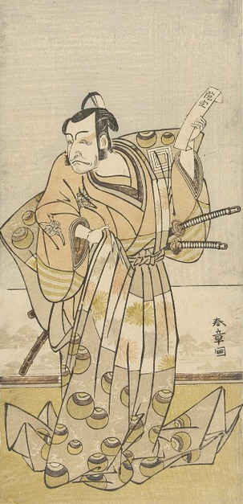

The Actor Ichikawa Danjūrō IV in the Role of the Spirit Ki no Natora by Katsukawa
Shunshō (Wikimedia)
The Actor Iwai Hanshirō IV in the Role of a Courtesan by Katsukawa Shunshō (
Wikimedia)[title unfound] by Katsukawa Shunshō (Pixabay
License)[title/artist
unfound] (Pixabay
License)